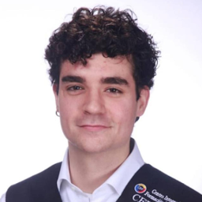

Curriculum Vitae
Mario
Galán Pedrayes
Apasionado de la tecnología y las ciencias de la salud. Creo que la unión de ambos campos puede revolucionar el mundo, provocando grandes avances y salvando vidas. He centrado mis estudios en estos dos mundos para desarrollar capacidades tanto técnicas como humanas, y seguir aprendiendo y descubriendo nuevos campos.

Experiencia laboral
Análisis de datos en hemogramas, uso de maquinaria de laboratorio, recepción y comprobación del estado de las muestras. Análisis de resultados para verificar la coherencia de los datos obtenidos.
Uso de maquinaria de laboratorio, recepción, comprobación y distribución de muestras. Realización de gasometrías, análisis de orinas y modificación de solicitudes de pruebas. Guardias nocturnas y festivas.
Toma de muestras ambientales en quirófanos para comprobar asepsia. Siembra de placas Petri con muestras de aire y análisis exhaustivo de colonias detectadas.
Integración con Oracle Forms, Oracle Reports y BiPublisher. Creación y modificación de formularios para los módulos del ERP Libra. Elaboración de manuales de usuario y técnicos.
Formación académica
Aptitudes
Tecnologías
Perfil personal
Certificados y cursos
- Programa generación digital: Agente del cambio — ATU Asturias
- Aspectos básicos de planificación y gestión de proyectos — Coursera
- Curso de SEO para principiantes — WebPositer
- Programa formativo en Medicina de Laboratorio Clínico — FormaLab
- Prevención de riesgos laborales avanzado — CCOO
- Introducción al Desarrollo Web I y II — Google
- Desarrollo de Apps Móviles — Google
- Máster en SQL Server: Desde cero a nivel profesional — Udemy
- Curso de Base de Datos SQLite — Udemy
- Aprende SQL desde cero, 50 ejercicios — Udemy
- Aprende Lenguaje C de cero a experto — Udemy
- Curso de gobierno de datos con el framework MARD — Udemy
- Curso de Java — Nivel básico — Udemy
- Curso WordPress 2025: Cómo crear una página web desde cero — Udemy
- Cómo crear una página web con WordPress y Elementor 2025 — Udemy
- Trabajo en equipo online — Aula 10
Publicaciones científicas
Capítulos de libros
- Diagnóstico de infección de orina en el laboratorio clínico
- Efectos y técnicas de diagnóstico en pacientes infectados de Chlamydia trachomatis
- Detección de la anemia ferropénica
- Estudio del virus del papiloma humano y sus consecuencias
- Tratamiento y prevención de la infección por Helicobacter pylori
- Determinación de factores de coagulación en la evaluación de hemofilia y trastornos de sangrado
- Causas, síntomas, diagnóstico y tratamiento de la diabetes gestacional
- Diagnóstico de pacientes infectados por Treponema pallidum
- Enfermedad de Lyme
- Faringitis estreptocócica
Posters
- Definición, diagnóstico y tratamiento de la anemia ferropénica
- Definición, diagnóstico y tratamiento de infección urinaria
- Definición, diagnóstico y consecuencias de infección de Chlamydia trachomatis
- Definición, diagnóstico y prevención del virus del papiloma humano
- Definición, diagnóstico, tratamiento y prevención de la infección por Helicobacter pylori
- Definición, diagnóstico, prevención y tratamiento de la diabetes mellitus tipo 2